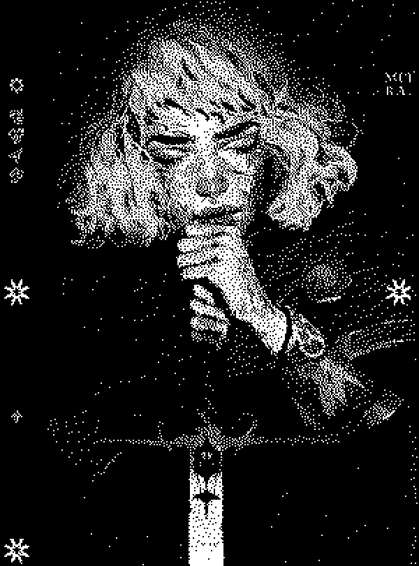

data collection//:[redacted]
run://alt-echo::initiative
engage #fail-safe...[
run://shadow-simulant.exe]
initiate:// anamnesis;
bank 1
bank 2
lastwish
lastwish
lastwish
lastwish
lastwish
lastwish
[config. alt ether] //- 0606 -/ =]
// #dest : "prealiia's ruin"
//[succumb] : i.c.a vol 16
//class="ithurdune"
.program [affliction]